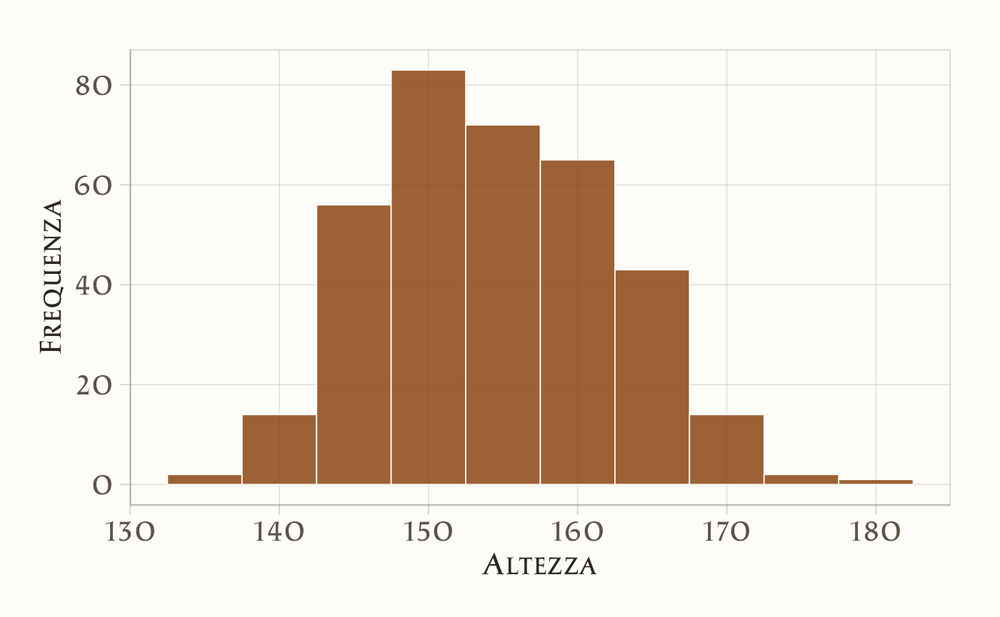
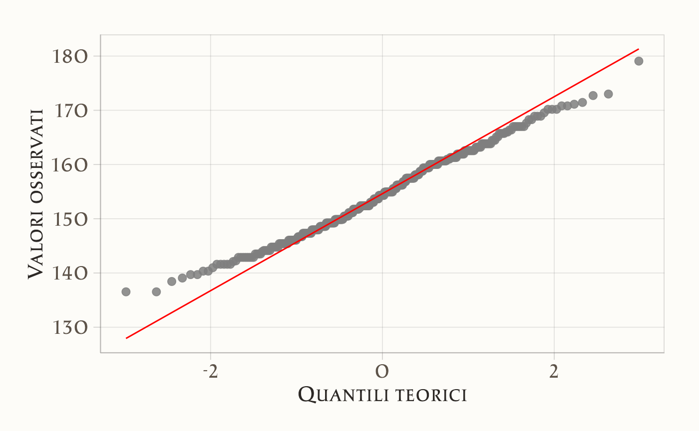
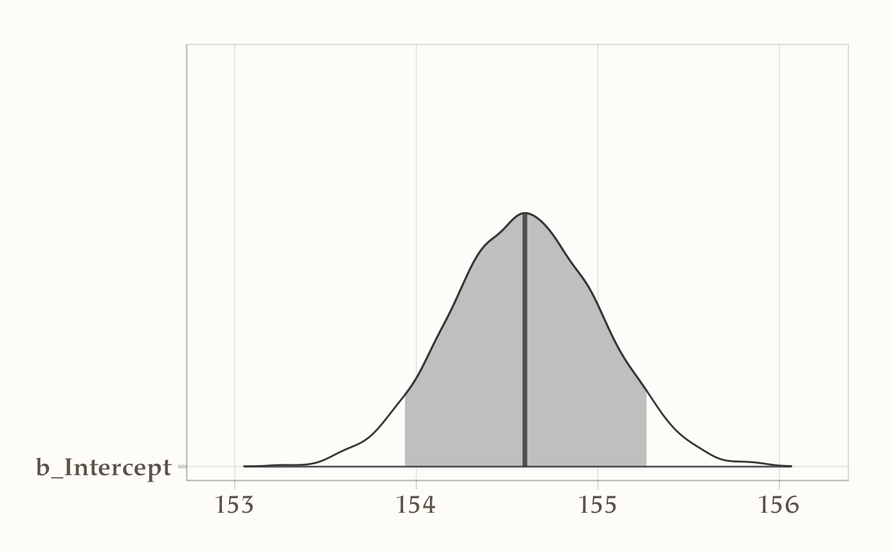
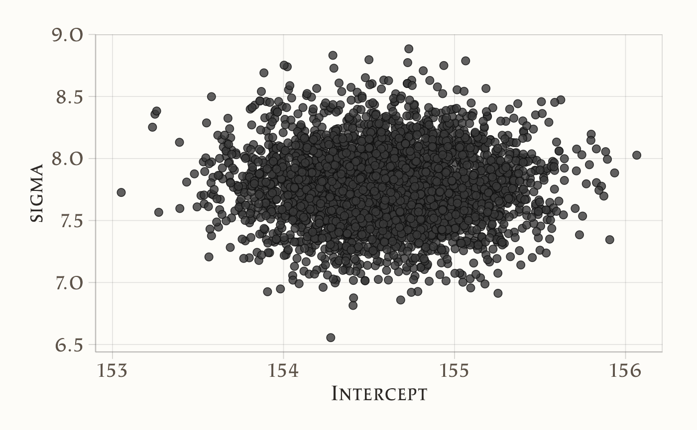
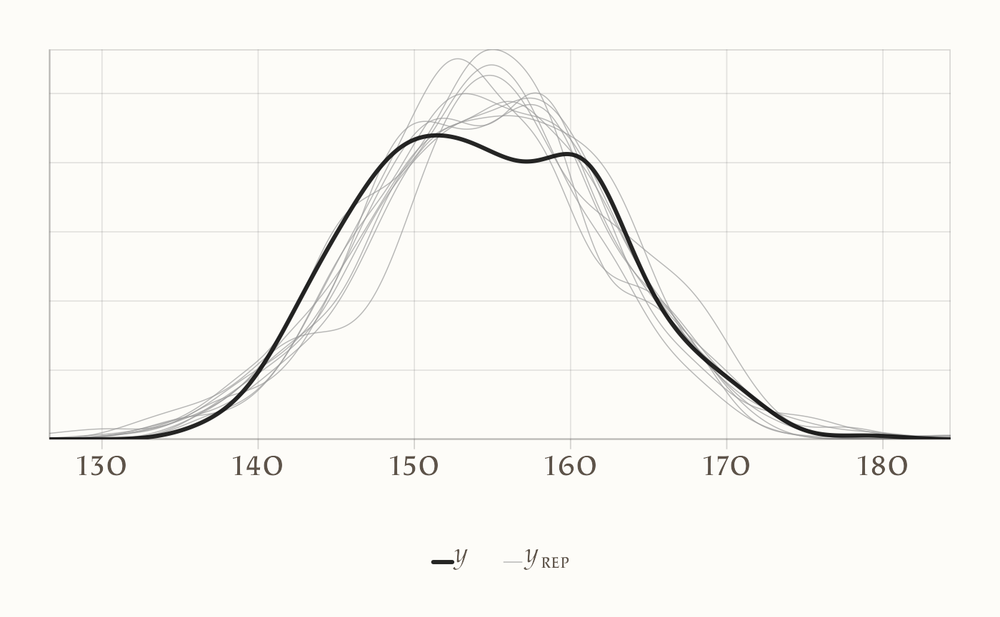
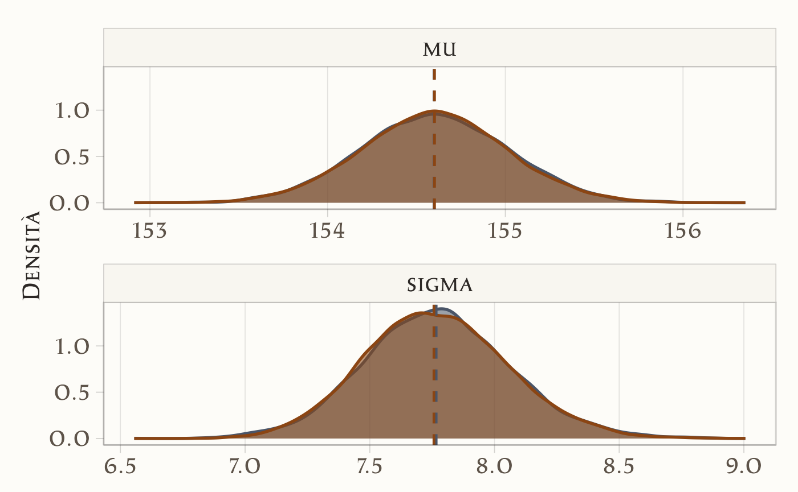
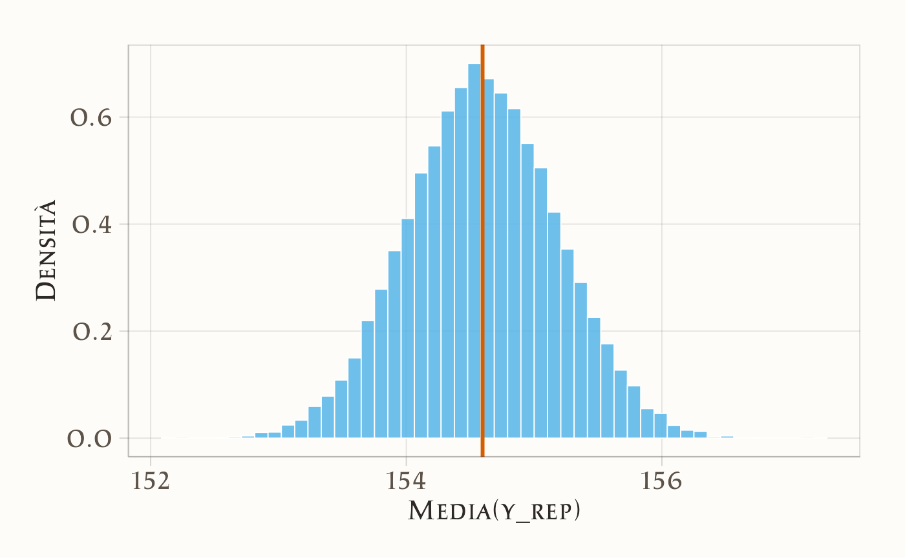

here::here("code", "_common.R") |>
source()
# Load packages
if (!requireNamespace("pacman")) install.packages("pacman")
pacman::p_load(cmdstanr, posterior, bayestestR, brms, ggdist)
conflicts_prefer(stats::sd)30 Inferenza bayesiana su una media
“Il problema statistico non è stimare una media come se fosse un’entità assoluta, ma descrivere la distribuzione delle nostre credenze su di essa.”
— ispirato a Harold Jeffreys
Introduzione
In questo capitolo affrontiamo uno dei problemi più elementari — e al tempo stesso fondamentali — della statistica: stimare la media di una popolazione a partire da un campione di osservazioni. È una situazione ricorrente nella ricerca psicologica: possiamo chiederci qual è l’altezza media in un gruppo di adolescenti, il livello medio di ansia in un campione clinico, oppure la soddisfazione media di studenti che hanno seguito un determinato corso.
Tradizionalmente, questo problema è stato affrontato nell’ottica frequentista, che porta a costruire intervalli di confidenza o a testare ipotesi sulla media. In questa prospettiva, la media della popolazione è un valore fisso ma sconosciuto, e il ragionamento si concentra sul comportamento dei campioni che avremmo potuto osservare “se ripetessimo l’esperimento molte volte”.
L’approccio bayesiano rovescia la prospettiva: la media non è un’entità misteriosa e fissa, ma una quantità sulla quale formuliamo delle credenze incerte, che possiamo aggiornare alla luce dei dati raccolti. Non stimiamo quindi “la media” in senso assoluto, ma descriviamo la distribuzione delle nostre convinzioni plausibili su di essa.
Questo cambiamento concettuale ha conseguenze profonde. Significa che l’analisi non si riduce a un verdetto dicotomico, ma diventa una rappresentazione sfumata dell’incertezza. Significa anche che possiamo integrare conoscenze pregresse tramite distribuzioni a priori, e che ogni inferenza riguarda direttamente i valori del parametro, non campioni ipotetici mai osservati.
In questo capitolo vedremo come costruire e interpretare una distribuzione a posteriori per la media di una popolazione, utilizzando esempi psicologici concreti. Sarà il primo passo per estendere il ragionamento bayesiano a situazioni più articolate, come il confronto tra due gruppi o la valutazione della grandezza di un effetto.
Panoramica del capitolo
- Come fare inferenza sulla media di un campione.
- Come trovare le distribuzioni a posteriori usando
brms. - Verificare il modello usando i pp-check plots.
30.1 La variabilità come punto di partenza
Ogni volta che raccogliamo dati psicologici, ci confrontiamo inevitabilmente con la variabilità. Alcune differenze sono tra individui:
Variabilità inter-individuale: ad esempio, quanto differiscono tra loro le altezze, i tempi di reazione o i livelli di benessere soggettivo?
Altre differenze sono all’interno dello stesso individuo, anche se meno visibili in un singolo rilevamento:
Variabilità intra-individuale: quanto potrebbe variare la risposta della stessa persona se la misurassimo in momenti diversi della giornata, o in giorni diversi? Anche quando non la osserviamo direttamente, la variabilità intra-individuale è sempre una componente latente del dato psicologico, e ci invita a riflettere sulle fonti di instabilità e fluttuazione nei comportamenti e negli stati mentali.
30.1.1 L’incertezza come oggetto dell’inferenza
A partire da questa variabilità, vogliamo formulare inferenze sul valore medio di un certo parametro (come l’altezza media in una popolazione). Ma ogni inferenza è anche un atto di stima incerta: nessun campione ci dà la verità, ma solo una gamma di possibilità più o meno plausibili.
In questo capitolo affronteremo quindi il problema dell’inferenza sulla media da due prospettive complementari:
- Approccio frequentista: basato sull’idea di ripetizione del campionamento e sul calcolo di un intervallo di confidenza;
- Approccio bayesiano: che assume esplicitamente l’incertezza e la rappresenta attraverso una distribuzione di probabilità (la distribuzione a posteriori).
30.1.2 Perché usare brms?
Invece di derivare la distribuzione a posteriori della media in modo analitico (come nei modelli con prior coniugati), useremo il pacchetto brms, che si basa su un potente algoritmo di campionamento chiamato NUTS (No-U-Turn Sampler). Questo ci permetterà di stimare numericamente l’intera distribuzione a posteriori della media e della variabilità, anche in casi in cui il calcolo analitico sarebbe difficile o impossibile. In questo modo, potremo:
- quantificare l’incertezza su ciò che ci interessa (ad esempio: qual è l’altezza media? con quanta certezza lo possiamo dire?);
- visualizzare in modo intuitivo l’effetto dei dati e dei priori sulle nostre stime;
- avvicinarci a un modo di pensare statistico più adatto alla complessità della psicologia, dove ogni dato è il risultato di molte fonti di variabilità.
30.2 Il modello Normale: un primo passo nella descrizione della variabilità
Quando parliamo di altezza, ansia, tempo di reazione o qualsiasi altra variabile psicologica continua, un punto di partenza comune è il modello Normale. Questo modello assume che le osservazioni siano distribuite attorno a un valore medio, con una certa dispersione. In termini formali, diciamo che ogni osservazione \(y_n\) è generata da una distribuzione Normale con media \(\mu\) e deviazione standard \(\sigma\):
\[ y_n \;\sim\; \mathcal N\bigl(\mu, \sigma\bigr). \]
Nel linguaggio dell’inferenza, \(\mu\) rappresenta il valore centrale che vogliamo stimare, mentre \(\sigma\) quantifica la variabilità delle osservazioni rispetto a quel centro. Entrambi i parametri sono ignoti, e l’obiettivo dell’inferenza è proprio descrivere l’incertezza che abbiamo su di essi.
Nel capitolo precedente abbiamo visto come calcolare la distribuzione a posteriori di questi parametri in modo analitico, quando si utilizzano prior coniugati. In questo capitolo, invece, riprendiamo lo stesso problema, ma adottiamo un approccio più generale e flessibile: stimiamo il modello usando il pacchetto brms, che utilizza metodi MCMC per approssimare la distribuzione a posteriori, anche quando non esistono soluzioni chiuse.
30.3 Un esempio concreto: la variabilità dell’altezza nei !Kung San
Per rendere più concreto il problema, useremo un dataset storico: i dati raccolti da Nancy Howell tra la fine degli anni ’60 presso i !Kung San, una popolazione del deserto del Kalahari con uno stile di vita basato su caccia e raccolta.
I dati che utilizzeremo riportano le altezze di individui adulti (con età superiore ai 18 anni). Questo esempio è tratto da McElreath (2020), ed è ideale per iniziare a riflettere sulla variabilità inter-individuale.
Il campione è composto da 352 osservazioni:
length(df$height)
#> [1] 35230.3.1 Distribuzione osservata dell’altezza
Una prima esplorazione visiva ci aiuta a capire la forma della distribuzione osservata. L’istogramma seguente mostra come si distribuiscono le altezze nel campione:
ggplot(df, aes(x = height)) +
geom_histogram(binwidth = 5) +
labs(x = "Altezza", y = "Frequenza") 
La forma appare compatibile con una distribuzione Normale. Ma quanto bene si adatta?
df |>
ggplot(aes(sample = height)) +
stat_qq() +
stat_qq_line(colour = "red") +
labs(x = "Quantili teorici", y = "Valori osservati") 
Il Q-Q plot mostra un leggero scostamento: la curva empirica è un po’ più piatta rispetto alla linea teorica, segno che la variabilità osservata è leggermente inferiore a quella attesa da una Normale standard (code meno pesanti). Tuttavia, la discrepanza è modesta, e possiamo comunque usare il modello gaussiano come prima approssimazione della distribuzione dei dati.
30.4 Specifica del modello: una distribuzione per descrivere l’incertezza
Nel modello bayesiano, ipotizziamo che ogni osservazione \(y_n\) sia indipendente e identicamente distribuita (iid):
\[ y_n \sim \mathcal N(\mu, \sigma), \]
- \(\mu\): la media vera (ignota) della popolazione.
- \(\sigma\): la deviazione standard vera, che misura quanta variabilità c’è tra gli individui.
L’assunzione di indipendenza implica che conoscere l’errore commesso su un individuo non ci dice nulla sull’errore commesso su un altro. L’assunzione di identica distribuzione implica che tutti gli individui provengano dalla stessa popolazione.
Scrivere \(y_n \sim \mathcal N(\mu, \sigma)\) è quindi un modo compatto per dire che ogni osservazione è un’espressione della variabilità inter-individuale, distribuita attorno a un valore centrale.
30.5 Stime preliminari: una fotografia della variabilità
Prima di definire i priori o stimare la distribuzione a posteriori, è utile esplorare alcune statistiche descrittive:
Queste due quantità ci offrono una prima “fotografia” della variabilità nel campione:
- La media campionaria è una stima iniziale di \(\mu\), che potrà guidarci nella scelta di una prior realistica.
- La deviazione standard campionaria è una misura iniziale di \(\sigma\), e descrive quanto le osservazioni si discostano, in media, dalla media.
Anche se queste statistiche non riflettono ancora in modo completo l’incertezza che abbiamo, sono molto utili per:
- Guidare la scelta dei priors in un’ottica informata;
- Individuare possibili outlier o anomalie, che potrebbero influenzare sia l’inferenza frequentista sia quella bayesiana.
30.6 Il modello frequentista: stimare la media come punto fisso
Nel contesto dell’inferenza classica, uno dei modi più semplici per stimare la media di una popolazione consiste nell’adottare un modello lineare senza predittori: un modello che si limita a stimare un’unica quantità, chiamata intercetta. In pratica, questo corrisponde a stimare la media campionaria dei dati osservati.
In R, questo modello si specifica in modo molto compatto:
height ~ 1Il simbolo 1 indica che vogliamo stimare solo l’intercetta, senza nessuna variabile esplicativa. In termini pratici, l’intercetta rappresenta qui la media dell’altezza nel campione.
30.6.1 Specifica e stima del modello
Possiamo stimare il modello con la funzione lm():
fm1 <- lm(
formula = height ~ 1,
data = df
)Questo comando applica il metodo della minima somma dei quadrati, producendo una stima puntuale della media, assieme a una misura della sua variabilità.
30.6.2 Interpretare i risultati
L’output del modello si ottiene con:
summary(fm1)
#>
#> Call:
#> lm(formula = height ~ 1, data = df)
#>
#> Residuals:
#> Min 1Q Median 3Q Max
#> -18.072 -6.007 -0.292 6.058 24.473
#>
#> Coefficients:
#> Estimate Std. Error t value Pr(>|t|)
#> (Intercept) 154.597 0.413 375 <2e-16
#>
#> Residual standard error: 7.74 on 351 degrees of freedomIl riassunto mostra diverse informazioni, ma le più rilevanti in questo contesto sono:
- La stima dell’intercetta \(\hat{\alpha}\): coincide con la media campionaria delle altezze.
- L’errore standard: misura la variabilità attesa della stima \(\hat{\alpha}\) se ripetessimo il campionamento molte volte.
- Il p-value: quantifica la probabilità di osservare un valore della statistica test così estremo (o più) se la media vera fosse 0. In questo caso ha scarso interesse pratico, perché il valore di riferimento (0 cm) non è plausibile.
- Il R²: che in assenza di predittori non è interpretabile in modo utile.
30.6.3 Intervallo di confidenza al 95%: una misura indiretta dell’incertezza
Il modello frequentista non descrive la nostra incertezza come una distribuzione su \(\mu\), ma fornisce invece un intervallo di confidenza, che ha un’interpretazione indiretta: se ripetessimo l’esperimento un numero molto elevato di volte, in circa il 95% dei casi l’intervallo conterrebbe il vero valore della media.
Possiamo calcolarlo con:
confint(fm1, level = 0.95)
#> 2.5 % 97.5 %
#> (Intercept) 154 155Questo intervallo si basa sulla formula classica:
\[ \hat{\alpha} \pm t_{\text{df}} \cdot \text{SE}(\hat{\alpha}) \]
dove:
- \(\hat{\alpha}\) è la stima puntuale della media,
- \(t_{\text{df}}\) è il quantile della distribuzione t di Student (con \(n - 1\) gradi di libertà),
- \(\text{SE}(\hat{\alpha})\) è l’errore standard della stima.
30.6.4 Calcolo manuale (opzionale)
Se vogliamo calcolare l’intervallo “a mano”, possiamo scrivere:
coef(fm1) + c(-1, 1) * qt(0.975, df.residual(fm1)) * 0.413
#> [1] 154 155-
coef(fm1)restituisce la stima dell’intercetta, -
qt(0.975, df.residual(fm1))fornisce il valore critico t, -
0.413è l’errore standard (da sostituire con quello esatto, se disponibile).
30.6.5 Riflessione: cos’è l’incertezza, per davvero?
Nel modello frequentista, l’incertezza sulla media è descritta in termini di variabilità potenziale tra campioni, non come incertezza su un valore specifico. Il parametro \(\mu\) è trattato come fisso ma ignoto, e tutta l’incertezza risiede nella stima che otteniamo da un singolo campione.
In questo senso, l’approccio frequentista non fornisce una distribuzione sul parametro: non possiamo dire “la probabilità che la media sia tra 153 e 155 cm è del 95%”, ma solo che “se ripetessimo l’esperimento molte volte, l’intervallo conterrebbe la media vera nel 95% dei casi”.
Nel prossimo paragrafo vedremo come un modello bayesiano offra un’alternativa: trattare \(\mu\) come una variabile aleatoria su cui esprimere direttamente l’incertezza, permettendoci di formulare affermazioni probabilistiche esplicite sui valori possibili del parametro.
30.7 Il modello Bayesiano: descrivere l’incertezza con distribuzioni
Dopo aver stimato la media dell’altezza con il modello frequentista, possiamo affrontare lo stesso problema con un approccio bayesiano, usando il pacchetto brms. Questo ci consente di rappresentare in modo più diretto l’incertezza che abbiamo sui parametri del modello.
Nel framework bayesiano, tutti i parametri sono trattati come variabili aleatorie: invece di stimare un singolo valore per la media, stimiamo una distribuzione a posteriori, che riflette l’incertezza residua dopo aver osservato i dati.
30.7.1 Priori debolmente informativi: quando “non sappiamo molto”
Ogni modello bayesiano richiede la specifica di distribuzioni a priori. Tuttavia, quando non abbiamo conoscenze forti da inserire, possiamo affidarci ai priori debolmente informativi: distribuzioni ampie, generiche e poco vincolanti, che permettono ai dati di “parlare da soli”.
Se non specifichiamo nulla, brms userà questi prior di default. È un buon punto di partenza, soprattutto per modelli semplici e dataset abbastanza ricchi.
30.7.2 Specifica del modello in brms
Il codice è simile a quello usato con lm():
fm2 <- brm(
formula = height ~ 1, # stima solo l'intercetta (media dell’altezza)
family = gaussian(), # assunzione di distribuzione normale
data = df, # dataset
chains = 4, # numero di catene MCMC
iter = 2000, # iterazioni per catena
warmup = 1000, # periodo di adattamento
backend = "cmdstanr" # motore di calcolo efficiente
)Qui stiamo stimando due parametri:
- \(\mu\) → media dell’altezza nella popolazione;
- \(\sigma\) → deviazione standard, che rappresenta quanta variabilità inter-individuale osserviamo.
In termini formali, il modello è scritto come:
\[ y_i = \alpha + \varepsilon_i,\quad \varepsilon_i \sim \mathcal{N}(0, \sigma). \]
30.7.3 Interpretare l’output: incertezza esplicitata
Una volta che il modello è stato stimato, possiamo esaminarne l’output:
summary(fm2)
#> Family: gaussian
#> Links: mu = identity; sigma = identity
#> Formula: height ~ 1
#> Data: df (Number of observations: 352)
#> Draws: 4 chains, each with iter = 2000; warmup = 1000; thin = 1;
#> total post-warmup draws = 4000
#>
#> Regression Coefficients:
#> Estimate Est.Error l-95% CI u-95% CI Rhat Bulk_ESS Tail_ESS
#> Intercept 154.60 0.40 153.79 155.38 1.00 3342 2620
#>
#> Further Distributional Parameters:
#> Estimate Est.Error l-95% CI u-95% CI Rhat Bulk_ESS Tail_ESS
#> sigma 7.76 0.29 7.23 8.35 1.00 3158 2486
#>
#> Draws were sampled using sample(hmc). For each parameter, Bulk_ESS
#> and Tail_ESS are effective sample size measures, and Rhat is the potential
#> scale reduction factor on split chains (at convergence, Rhat = 1).Nel risultato troveremo:
- Media della distribuzione a posteriori per \(\alpha\), che è la stima centrale di \(\mu\);
- Errore standard a posteriori, cioè quanto fluttua \(\mu\) nei campioni simulati;
- Intervallo di credibilità al 95%: l’intervallo in cui cade il 95% della distribuzione a posteriori di \(\mu\).
A differenza dell’intervallo di confidenza frequentista, qui possiamo davvero dire:
C’è il 95% di probabilità che la media dell’altezza si trovi in questo intervallo, dati il modello e i dati osservati.
30.7.4 Riportare i risultati: due linguaggi per lo stesso fenomeno
| Approccio | Risultato |
|---|---|
| Frequentista | “La media stimata è 154.6, con un intervallo di confidenza al 95% tra 153.8 e 155.4.” |
| Bayesiano | “La media stimata a posteriori è 154.6, con un intervallo di credibilità al 95% tra 153.8 e 155.4.” |
Numericamente possono coincidere, ma la logica inferenziale è diversa: nel caso bayesiano, l’intervallo descrive ciò che crediamo plausibile; nel frequentista, ciò che la procedura catturerebbe nella maggior parte dei campioni ripetuti.
30.7.5 Esplorare i campioni a posteriori: guardare l’incertezza in faccia
Dopo aver stimato il modello, possiamo accedere direttamente ai campioni generati dall’algoritmo NUTS:
as_draws_df(fm2) %>% head(3)
#> # A draws_df: 3 iterations, 1 chains, and 5 variables
#> b_Intercept sigma Intercept lprior lp__
#> 1 155 7.6 155 -6.1 -1224
#> 2 155 7.6 155 -6.1 -1224
#> 3 155 7.6 155 -6.1 -1224
#> # ... hidden reserved variables {'.chain', '.iteration', '.draw'}Ogni riga della colonna b_Intercept rappresenta un valore plausibile per \(\mu\), estratto dalla sua distribuzione a posteriori. Questi campioni sono il cuore dell’inferenza bayesiana: ci permettono di costruire grafici, intervalli e ragionamenti probabilistici.
30.7.6 Calcoli riassuntivi sui campioni
Possiamo usare i campioni per calcolare:
Questi valori sintetizzano l’incertezza associata alla nostra stima della media: non un singolo punto, ma una nuvola di possibilità, tutte compatibili con i dati osservati.
30.7.7 Conclusioni intermedie
Abbiamo visto come:
- L’approccio frequentista fornisca una stima puntuale e un intervallo ipotetico di copertura.
- L’approccio bayesiano fornisca una distribuzione completa a posteriori, da cui possiamo derivare medie, intervalli, probabilità e visualizzazioni.
Entrambi gli approcci descrivono la variabilità tra individui, ma il metodo bayesiano offre strumenti più trasparenti per rappresentare l’incertezza sui parametri.
Questo è particolarmente utile in psicologia, dove campioni ridotti, contesti variabili e differenze individuali richiedono modelli che sappiano dire “quanto (non) sappiamo”.
Nel prossimo paragrafo vedremo come possiamo personalizzare i priori, incorporando informazioni pregresse (da studi precedenti, teoria, esperienza clinica…), e come questo possa influenzare l’inferenza nei casi in cui i dati da soli non siano sufficientemente informativi.
30.8 Uso dei Prior nel Modello Bayesiano: rendere esplicite le ipotesi sull’incertezza
Finora abbiamo visto che è possibile stimare un modello bayesiano anche senza specificare esplicitamente i prior: in tal caso, brms utilizza prior debolmente informativi, lasciando che siano i dati a guidare l’inferenza.
Ma il cuore dell’approccio bayesiano sta proprio qui: nella possibilità di incorporare conoscenze precedenti, aspettative, risultati di studi precedenti — insomma, di modellare in modo esplicito e trasparente l’incertezza che abbiamo prima di vedere i dati.
30.8.1 Tre domande chiave prima di stimare
Prima di usare un modello bayesiano, è utile porsi alcune domande fondamentali:
- Cosa sappiamo già del fenomeno?
- Come possiamo esprimere questa conoscenza sotto forma di distribuzioni?
- Quanto vogliamo che questa conoscenza influenzi l’inferenza?
La risposta a queste domande guida la scelta dei prior. Nei passaggi che seguono, vedremo come un modello informato da prior realistici possa non solo migliorare la stima, ma anche aumentare la coerenza tra teoria e dati.
30.8.2 Specificare i prior: un esempio concreto
Riprendiamo il nostro esempio sull’altezza nella popolazione dei !Kung San. Supponiamo di avere un’idea ragionevole su quanto potrebbe essere la media e la variabilità delle altezze.
Possiamo tradurre questa conoscenza nel linguaggio delle distribuzioni:
Per \(\mu\) (la media), ipotizziamo: \(\mu \sim \mathcal{N}(181, 30)\) — una media attesa intorno a 181 cm, con ampio margine di incertezza.
Per \(\sigma\) (la deviazione standard), ipotizziamo: \(\sigma \sim \mathcal{N}^+(0, 20)\) — una normale troncata a destra, che garantisce valori positivi.
Questi prior sono informativi ma ampi: riflettono aspettative plausibili, senza imporre vincoli troppo rigidi.
McElreath scherza dicendo di usare come prior la propria altezza. L’ironia nasconde un principio importante: ogni ipotesi è valida, purché dichiarata. Un buon modello bayesiano non finge oggettività, ma esplicita l’incertezza iniziale.
30.8.3 Forma del modello con prior espliciti
Il modello completo si scrive così:
\[ \begin{aligned} Y_i &\sim \mathcal{N}(\mu, \sigma) \\\\ \mu &\sim \mathcal{N}(181,\ 30) \\\\ \sigma &\sim \mathcal{N}^+(0,\ 20) \end{aligned} \]
Qui, sia la media sia la variabilità della popolazione sono trattate come quantità soggette a incertezza. La stima diventa un aggiornamento: partiamo da un’opinione iniziale e la modifichiamo alla luce dei dati.
30.8.4 Implementazione in brms
30.8.5 Analisi dell’output
Una volta stimato il modello, possiamo esaminarlo come sempre con:
summary(fm3)
#> Family: gaussian
#> Links: mu = identity; sigma = identity
#> Formula: height ~ 1
#> Data: df (Number of observations: 352)
#> Draws: 4 chains, each with iter = 2000; warmup = 1000; thin = 1;
#> total post-warmup draws = 4000
#>
#> Regression Coefficients:
#> Estimate Est.Error l-95% CI u-95% CI Rhat Bulk_ESS Tail_ESS
#> Intercept 154.60 0.41 153.80 155.41 1.00 3156 2659
#>
#> Further Distributional Parameters:
#> Estimate Est.Error l-95% CI u-95% CI Rhat Bulk_ESS Tail_ESS
#> sigma 7.77 0.29 7.20 8.38 1.00 3256 2596
#>
#> Draws were sampled using sample(hmc). For each parameter, Bulk_ESS
#> and Tail_ESS are effective sample size measures, and Rhat is the potential
#> scale reduction factor on split chains (at convergence, Rhat = 1).Se i dati sono informativi (come in questo caso), l’effetto dei prior sarà contenuto: la distribuzione a posteriori sarà molto simile a quella ottenuta con prior deboli. Questo è un comportamento desiderabile: il prior non deve forzare i risultati, ma integrarsi con essi.
30.8.6 Scegliere il livello dell’intervallo di credibilità
Possiamo modificare la probabilità coperta dall’intervallo credibile, ad esempio scegliendo un intervallo all’89% anziché al 95%:
summary(fm3, prob = 0.89)
#> Family: gaussian
#> Links: mu = identity; sigma = identity
#> Formula: height ~ 1
#> Data: df (Number of observations: 352)
#> Draws: 4 chains, each with iter = 2000; warmup = 1000; thin = 1;
#> total post-warmup draws = 4000
#>
#> Regression Coefficients:
#> Estimate Est.Error l-89% CI u-89% CI Rhat Bulk_ESS Tail_ESS
#> Intercept 154.60 0.41 153.94 155.27 1.00 3156 2659
#>
#> Further Distributional Parameters:
#> Estimate Est.Error l-89% CI u-89% CI Rhat Bulk_ESS Tail_ESS
#> sigma 7.77 0.29 7.32 8.25 1.00 3256 2596
#>
#> Draws were sampled using sample(hmc). For each parameter, Bulk_ESS
#> and Tail_ESS are effective sample size measures, and Rhat is the potential
#> scale reduction factor on split chains (at convergence, Rhat = 1).Questa scelta è proposta da McElreath come default per motivi pedagogici: evitare che l’intervallo venga interpretato come test di significatività.
“Why 89%? Because it’s prime.” — è un invito a pensare criticamente alle convenzioni statistiche, e a riflettere su cosa stiamo cercando davvero di comunicare quando riportiamo un intervallo.
30.8.7 Cosa otteniamo con prior espliciti?
Usare prior informativi consente di:
- Incorporare conoscenze teoriche, esperienze passate, dati precedenti.
- Rendere il modello più robusto quando i dati sono scarsi o rumorosi.
- Evitare stime irrealistiche in contesti con alta incertezza.
- Esplicitare le nostre ipotesi, invece di nasconderle dietro un’apparente neutralità.
30.8.8 Conclusione
In un modello bayesiano, ogni assunzione è chiara e trattabile. I risultati non sono semplici numeri, ma distribuzioni di credibilità che raccontano ciò che è plausibile, dato ciò che sapevamo prima e ciò che abbiamo osservato ora.
Questo rende l’approccio bayesiano particolarmente adatto alla psicologia: un campo dove l’incertezza è la norma, la variabilità è parte del fenomeno da spiegare, e la trasparenza delle assunzioni è fondamentale.
Nel prossimo paragrafo, ci concentreremo su come visualizzare e valutare queste distribuzioni a posteriori, usando strumenti diagnostici e grafici che ci aiutano a comprendere — e comunicare — la variabilità residua stimata dal modello.
30.9 Visualizzare l’incertezza con bayesplot
Il pacchetto bayesplot è uno strumento prezioso per ogni analisi bayesiana: permette di esplorare visivamente la variabilità delle stime a posteriori, di diagnosticare l’efficienza del campionamento MCMC e di verificare se il modello riesce a riprodurre i dati osservati.
In un contesto psicologico, dove spesso i dati sono rumorosi e le inferenze complesse, poter visualizzare dove e quanto il modello è incerto è fondamentale.
30.9.1 Traceplot: osservare le catene in azione
Il traceplot mostra l’evoluzione dei campioni per ogni parametro nel corso delle iterazioni MCMC. Serve a controllare:
- che le catene siano stazionarie (nessuna deriva sistematica),
- che si mescolino bene (assenza di autocorrelazione),
- che ci sia convergenza (tutte le catene esplorano la stessa distribuzione).
Un buon traceplot mostra bande dense, senza tendenze crescenti o oscillazioni lente: questo suggerisce che il campionamento stia catturando in modo affidabile la distribuzione a posteriori.
30.9.2 Densità a posteriori: cosa crediamo dopo aver visto i dati
Per visualizzare la distribuzione di probabilità di un parametro stimato, possiamo usare:
mcmc_areas(fm3, regex_pars = "b_Intercept", prob = 0.89)
Questa funzione evidenzia l’intervallo credibile in cui cade, ad esempio, l’89% della densità a posteriori per la media dell’altezza.
A differenza dell’intervallo di confidenza, qui possiamo davvero dire che c’è l’89% di probabilità che la media vera sia compresa in quell’intervallo.
30.9.3 Distribuzione congiunta di due parametri: incrociare incertezze
Quando vogliamo esplorare la relazione tra due parametri (ad esempio, media e deviazione standard), possiamo usare:
mcmc_scatter(fm3, pars = c("Intercept", "sigma"))
Questo tipo di visualizzazione è utile per valutare dipendenze tra parametri: ad esempio, se i campioni sono inclinati lungo una diagonale, significa che c’è correlazione a posteriori tra i due.
30.9.4 Posterior Predictive Check: il modello spiega davvero i dati?
Una delle forze dell’approccio bayesiano è che i modelli sono generativi: possiamo simulare nuovi dati partendo dalle distribuzioni a posteriori e confrontarli con quelli osservati.
pp_check(fm3)
La funzione pp_check() mostra:
- in nero: la distribuzione dei dati osservati,
- in colore: più repliche simulate dal modello.
Se le simulazioni coprono bene i dati reali, il modello è coerente con le osservazioni. Se invece ci sono scostamenti sistematici, questo può indicare che:
- la distribuzione scelta non è adatta,
- ci sono outlier non gestiti,
- mancano variabili esplicative nel modello.
30.10 L’approccio tradizionale: il test t di Student
Prima dell’adozione diffusa dei metodi bayesiani, l’inferenza sulla media veniva solitamente effettuata con il test t. Questo approccio assume che la variabilità osservata nel campione (stimata con la deviazione standard campionaria) sia sufficiente a rappresentare l’incertezza sul parametro d’interesse.
Il calcolo si basa sulla statistica:
\[ T = \frac{\bar{X} - \mu_0}{s / \sqrt{n}}. \]
Il test permette di costruire un intervallo di confidenza, ma non di fare affermazioni probabilistiche sui parametri. Il valore \(\mu\) è considerato fisso ma sconosciuto, e l’incertezza è attribuita unicamente al campionamento.
30.11 Confronto tra approcci: stesso dato, epistemologie diverse
| Elemento | Frequentista | Bayesiano |
|---|---|---|
| Concetto di parametro | Fisso ma ignoto | Variabile aleatoria |
| Incertezza | Tra campioni | Nei parametri |
| Intervallo (95%) | Procedura che copre nel 95% dei casi | Credibilità del 95% sul valore vero |
| Estensione a modelli complessi | Limitata | Flessibile |
| Trasparenza delle assunzioni | Implicita | Esplicita |
30.12 Replicare l’analisi con cmdstanr
Ora replichiamo con cmdstanr (Stan esplicito) l’analisi ottenuta con brm e salvata nell’oggetto fm3.
Il modello è:
\[ y_i \sim \mathrm{Normal}(\mu,\sigma), \qquad \mu \sim \mathcal{N}(181, 30), \qquad \sigma \sim \mathcal{N}^+(0, 20), \]
dove \(\mathcal{N}^+\) indica la normale troncata ai valori positivi.
Il modello Stan equivalente è
stancode <- "
data {
int<lower=1> N;
vector[N] y;
}
parameters {
real mu;
real<lower=0> sigma;
}
model {
// Priors equivalenti a brms:
mu ~ normal(181, 30);
sigma ~ normal(0, 20); // con <lower=0> diventa automaticamente Half-Normal(0,20)
// Likelihood
y ~ normal(mu, sigma);
}
generated quantities {
vector[N] y_rep;
for (n in 1:N) y_rep[n] = normal_rng(mu, sigma);
}
"Compiliamo:
stan_file <- write_stan_file(stancode, dir = "stan", basename = "one_mean_fm3.stan")
mod <- cmdstan_model(stan_file)Prepariamo i dati:
stan_data <- list(N = nrow(df), y = as.numeric(df$height))
glimpse(stan_data)
#> List of 2
#> $ N: int 352
#> $ y: num [1:352] 152 140 137 157 145 ...Eseguiamo il campionamento:
fit_stan <- mod$sample(
data = stan_data,
seed = 1234,
chains = 4,
iter_warmup = 1000,
iter_sampling = 4000,
parallel_chains = 4,
adapt_delta = 0.95
)Esaminiamo i risultati:
fit_stan$summary(variables = c("mu","sigma"))
#> # A tibble: 2 × 10
#> variable mean median sd mad q5 q95 rhat ess_bulk ess_tail
#> <chr> <dbl> <dbl> <dbl> <dbl> <dbl> <dbl> <dbl> <dbl> <dbl>
#> 1 mu 154.601 154.602 0.413 0.406 153.918 155.285 1.000 10185.459 8086.662
#> 2 sigma 7.767 7.757 0.290 0.288 7.303 8.259 1.000 10043.384 8612.69330.12.1 Confronto delle posterior (brms vs Stan)
draws_brm <- as_draws_df(fm3) |>
transmute(mu = b_Intercept, sigma = sigma)
draws_stan <- as_draws_df(fit_stan$draws(variables = c("mu","sigma")))
summ_brm <- posterior::summarise_draws(draws_brm) |> mutate(modello = "brms")
summ_stan <- posterior::summarise_draws(draws_stan) |> mutate(modello = "stan")
dplyr::bind_rows(summ_brm, summ_stan) |>
dplyr::select(modello, variable, mean, sd, q5, q95, rhat, ess_bulk) |>
dplyr::arrange(variable, modello)
#> # A tibble: 4 × 8
#> modello variable mean sd q5 q95 rhat ess_bulk
#> <chr> <chr> <dbl> <dbl> <dbl> <dbl> <dbl> <dbl>
#> 1 brms mu 154.603 0.414 153.924 155.281 1.000 3150.751
#> 2 stan mu 154.601 0.413 153.918 155.285 1.000 10185.459
#> 3 brms sigma 7.771 0.294 7.305 8.264 1.000 3220.370
#> 4 stan sigma 7.767 0.290 7.303 8.259 1.000 10043.38430.12.2 Visualizzazione delle densità posteriori

Se le aree colorate e le linee dei due modelli si sovrappongono quasi perfettamente in ciascun pannello, le posterior coincidono entro il rumore Monte Carlo.
30.12.3 Posterior predictive check
draws_yrep <- fit_stan$draws("y_rep")
arr <- posterior::as_draws_array(draws_yrep)
M <- dim(arr)[1] * dim(arr)[2]
N <- dim(arr)[3]
yrep_df <- as.data.frame(matrix(arr, nrow = M, ncol = N))
obs_mean <- mean(df$height)
yrep_mean <- rowMeans(as.matrix(yrep_df))
ppc_df <- data.frame(stat = yrep_mean)
base_col <- "#56B4E9"
line_col <- "#D55E00"
ggplot(ppc_df, aes(x = stat)) +
geom_histogram(aes(y = after_stat(density)), bins = 50, color = "white", fill = base_col) +
geom_vline(xintercept = obs_mean, color = line_col, linewidth = 1) +
labs(x = "Media(y_rep)", y = "Densità")
30.12.4 Nota sulle prior
Con il vincolo \(\sigma>0\) in Stan, la specifica sigma ~ normal(0, 20); implementa automaticamente una Half-Normal con scala 20, coerente con prior(normal(0, 20), class = "sigma") in brms. Questa equivalenza assicura che i risultati dei due approcci coincidano entro l’errore Monte Carlo, a parità di dati e impostazioni MCMC.
Riflessioni conclusive
In questo capitolo abbiamo riformulato un problema classico — la stima della media di una popolazione — nella prospettiva bayesiana. Abbiamo visto che ciò che otteniamo non è un singolo numero, ma una distribuzione a posteriori che descrive in modo esplicito le nostre credenze aggiornate sul parametro. Questa distribuzione ci dice quanto sono plausibili diversi valori della media, integrando insieme l’informazione a priori e i dati osservati.
Il passaggio dall’approccio frequentista a quello bayesiano segna un cambiamento concettuale profondo. Non ci limitiamo più a calcolare un intervallo di confidenza o a verificare un’ipotesi nulla, ma costruiamo una rappresentazione diretta dell’incertezza sui parametri che ci interessano. In questo modo, l’inferenza diventa non solo più intuitiva, ma anche più trasparente e coerente con il modo in cui gli psicologi ragionano sui fenomeni: sempre con un certo margine di dubbio, ma anche con la possibilità di pesare scenari alternativi.
Naturalmente, la stima di una media è solo il punto di partenza. Nella ricerca psicologica siamo spesso interessati a confrontare due gruppi, per capire se una popolazione differisce da un’altra, e se sì di quanto. Nei prossimi capitoli vedremo come estendere il ragionamento bayesiano a questi casi, collegando la stima della media al confronto tra condizioni sperimentali e alla valutazione della grandezza dell’effetto.
Bibliografia
McElreath, R. (2020). Statistical rethinking: A Bayesian course with examples in R and Stan (2nd Edition). CRC Press.
Tarrats-Pons, E., Mussons-Torras, M., & Jiménez-Pérez, Y. (2025). Efficacy of a Positive Psychology Intervention in Enhancing Optimism and Reducing Depression Among University Students: A Quasi-Experimental Study. Behavioral Sciences, 15(5), 571.